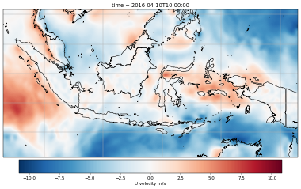

UV-wind-plot

The best parctice to study programming is by solving a problem. Recently, I found a website that contains a collection of png and jpg files. It was possible to download them manually one by one but it took time. In this post, I want to scrap all those figures using python, BeautifulSoup, requests, and wget. Recently, I found a website that contains a collection of png and jpg files. It was possible to download them manually one by one but it took time. In this post, I want to scrap all those figures using python, BeautifulSoup, requests, and wget.